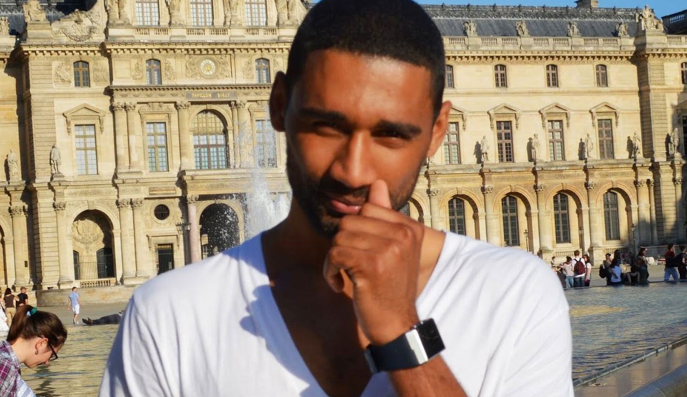

<!-- Main -->
<div id="main" class="container">
    <div class="row">

        <!-- Content -->
        <div id="content" class="8u">
            <article class="box post">
                <header>
                    <h2>
                        What We Do
                    </h2>
                </header>
                <p>
                    Unanimous Decisions is a newly formed nonprofit organized to assist youth
                    in using critical thinking skills to get the best result out of any situation and
                    enable them to become better students, make career choices, say no to
                    violence, manage anger, resolve conflict, respond to bullying without force,
                    say no to drugs and gangs and manage relationships. The organization
                    promotes the use of physical training, mentoring and cognitive-behavioral
                    groups to support youth in their development. Unanimous Decisions has an
                    engaged Board of Directors that is led by Larry Bailey, the executive
                    director. Mr. Bailey has more than 30 years of experience training
                    professional boxers and more than seven years of experience mentoring
                    youth Golden Diversity. Some of his trainees have been Robert “Boo Boo”
                    Sawyer, (ESPN Champion), Marion “Jack Hammer“ Wilson (Tri-State
                    Heavy Weight Champ). Sugar Ray Leonard (five time Champ) with the
                    Marvin Haggler Fight. Darrel “too sweet“ Coley to name a few. He has
                    helped numerous of youth by translating the rule of boxing to rules
                    governing behavior at home, school and in the community.
                </p>
                <p>
                    We will focus strongly on leadership and emotional intelligence. As the two
                    go hand in hand, we plan to mirror “The Leadership Challenge” by Kouzes
                    &amp; Posner. We use this to demonstrate the strong qualities of leadership,
                    which include the five practices of exemplary leadership. Being able to
                    control yourself and manage your relationship with others is extremely
                    important in professional life, which is defined by emotional intelligence.
                    We will be teaching and providing the tools necessary to guide the
                    individual in right path of self-awareness, social awareness, relationship
                    management, and motivation.
                </p>
                <p>
                    The value that the program brings is to help bolster the youth with positive
                    activities. Such activities will gear them towards:
                    <ul>
                        <li>Youth Feel Physically and Emotionally Safe</li>
                        <li>Youth Experience Belonging and Ownership</li>
                        <li>Youth Develop Self-Worth</li>
                        <li>Youth Discover Self</li>
                        <li>Youth Develop Quality Relationships with Peers and Adults</li>
                        <li>Youth Discuss Conflicting Values and Form Their Own</li>
                        <li>Youth Feel the Pride and Accountability that Comes with Mastery</li>
                        <li>Youth Expand Their Capacity to Enjoy Life and Know that Success is Possible</li>
                    </ul>
                </p>
            </article>
        </div>

        <!-- Sidebar -->
        <div id="sidebar" class="4u">

            <section>
                <ul class="divided">
                    <!-- Staff Member -->
                    <li>
                        <article class="box excerpt">
                            
                            <header>
                                <span class="staff">Larry Bailey</span>
                                <h3>Founder, CEO</h3>
                            </header>
                            <p>
                                Larry is The Man, the Myth, the Legend. He was born and raised in S.E. Washington D.C. He has been
                                avidly training Professional Boxers for over 35+ years. He is extremely passionate about serving the
                                communities that are at risk as well as disenfranchised. Larry came from a similar background and strives
                                in making sure to help people in those communities understand that education, a strong mindset and
                                having a vision are the ways out of their current situations to success and prosperity. He has volunteered
                                for 7+ years in Washington D.C. with multiple volunteer programs in the community before starting
                                Unanimous Decisions. He helps mentees translate the rules of boxing in utilizing the tool to the core rules
                                of governing behavior at home, school and in the community. Larry is highly praised within the
                                communities he is associated with. He has learned to connect well with the youth through activities,
                                especially boxing.
                            </p>
                        </article>
                    </li>

                    <!-- Staff Member -->
                    <li>
                        <article class="box excerpt">
                            
                            <header>
                                <span class="staff">Terri Bailey, OTD</span>
                                <h3>Mentor</h3>
                            </header>
                            <p>
                                Terri is the wife of Larry and they have been married for over 30 years. She currently is an Occupational
                                Therapist working within Prince Georges County Public Schools; she has over 30+ years of experience.
                                She is a proud Howard University Alumni. Terri is incredibly passionate about education as well as helping
                                mentees get exposure to the healthcare field and career opportunities that are available. Healthcare is
                                important to understand so the mentees can construct a path for the youth to connect mentally and
                                physically.
                            </p>
                        </article>
                    </li>

                    <!-- Staff Member -->
                    <li>
                        <article class="box excerpt">
                            
                            <header>
                                <span class="staff">Brandon Bailey, Software Engineer</span>
                                <h3>Mentor, Technology Enablement</h3>
                            </header>
                            <p>
                                Brandon is a Senior Engineer at Education Technology Startup in the Los Angeles area. He has been
                                working in the IT industry for nearly 10 years. He got his start in IT by studying Computer Engineering at
                                FAMU. Brandon has about 2 years of experience in starting and leading mentorship programs. He is
                                looking forward to connecting with mentees and providing them the proper tools for leadership to pass on
                                to the youth. He is a firm believer in the art of boxing and how it connects the body and mind to work hand
                                in hand in the decision making process.
                            </p>
                        </article>
                    </li>

                    <!-- Staff Member -->
                    <li>
                        <article class="box excerpt">
                            
                            <header>
                                <span class="staff">Robin Couch, MSA</span>
                                <h3>Mentor</h3>
                            </header>
                            <p>
                                Robin is a Dean of Teacher effectiveness with over 21 years of experience. She is currently working with
                                underserved DC Charter Schools. She is looking to expand knowledge within the communities and spread
                                the positivity of emotional intelligence. She is extremely passionate about teaching and literacy; she enjoys
                                providing teachers the skills and tools to better serve their students to prepare students for their journey in
                                life. She is looking forward to reaching more students within the communities to expand their knowledge;
                                she will provide the necessary tools to help prepare them to step into a bigger world.
                            </p>
                        </article>
                    </li>

                    <!-- Staff Member -->
                    <li>
                        <article class="box excerpt">
                            
                            <header>
                                <span class="staff">Dorcine Brown, MD</span>
                                <h3>Mentor</h3>
                            </header>
                            <p>
                                Dorcine has over 30+ years of experience of private practice in the medical field and a 3rd generation MD
                                in practicing Holistic Medicine. She is also a proud Howard University Alumni along with Terry. She is
                                passionate about helping individuals live healthy, happy and fulfilling lifestyles. She also enjoys teaching
                                youth the importance of education and going to school for the right fields best suited to their abilities. She is
                                also a firm believer in getting kids interested in healthcare as a profession.
                            </p>
                        </article>
                    </li>
                </ul>
            </section>
        </div>

    </div>
</div> <!-- Main -->